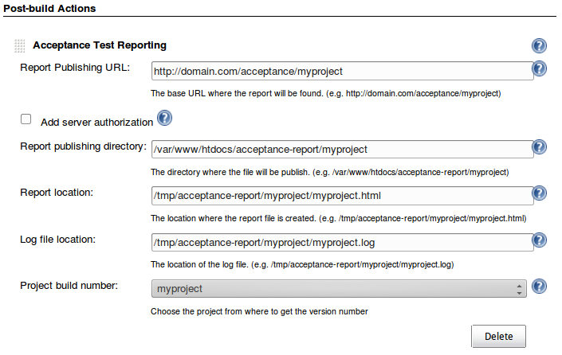

How does it work
The Exactor Framework generates an exit html report and probably also an exit log file. Exactor-Jenkins will then get those files and copy them to a designated directory exposed by a web server. You are responsible of providing the web server and Jenkins must have access to it (both writting to disk and via http). The copied files will have the build version number attached in the filename, allowing you to archive the reports and pointing to the build number that generated them.
| What my project with Exactor generates | What Exactor-Jenkins does | Waht the Web Server gets |
|---|---|---|
| /some_path/exit_report.html | exit_report-23.html | /var/www/myproject/exit_report-23.html |
| /some_path/exit.log | exit-23.log | /var/www/myproject/exit-23.log |
The above example assumes the build version to be 23.
How to configure it
How the build looks like
Exactor-Jenkins creates a permanent entry for every build (success or failure). Two links are added:
- To the html Exactor exit report.
- To the logger output file.
If the links aren't reachable by the time the build is open in Jenkins an error will be displayed.